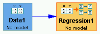

Inside the Regression Box |
The regression box in the main workspace area looks like this:

Tetrad currently offers linear regression as an option for continuous data sets. Possibly other types of regression (e.g., logistic regression) will be added in the future.